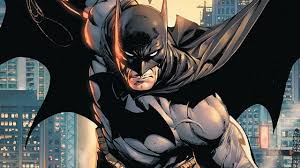

Batman o herói de Gotham
O maior dos morcegos
Terror dos inimigos

O maior dos morcegos
Terror dos inimigos
Data: 10/02/2026
O herói Batman conteve uma tentativa de fuga em massa no Asilo Arkham durante a madrugada. A ação rápida evitou que criminosos perigosos escapassem e causassem pânico em Gotham.
Leia mais...Data: 05/02/2026
Um plano do vilão Coringa foi impedido antes que explosivos fossem detonados na região central. O Cavaleiro das Trevas agiu rapidamente e entregou os suspeitos à polícia.
Leia mais...Data: 28/01/2026
A Wayne Enterprises anunciou um novo sistema tecnológico para reforçar a segurança em Gotham. O empresário Bruce Wayne afirmou que o objetivo é apoiar as autoridades locais.
Leia mais...Data: 20/01/2026
Após espalhar enigmas pela cidade, o vilão Charada foi localizado e capturado com a ajuda do Batman. A polícia confirmou que não houve feridos na operação.
Leia mais...